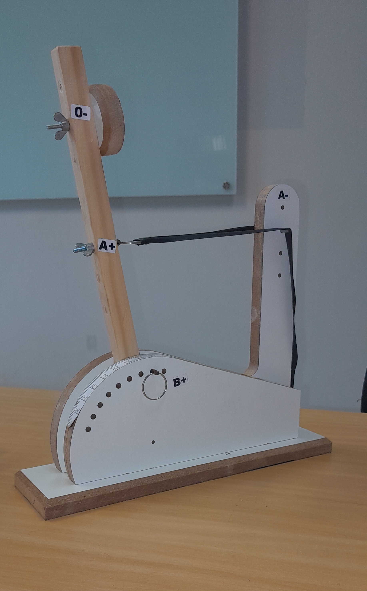

O relatório explica o experimento realizado em aula, com foco na analise de dados coletados após lançamentos efetuados com a catapulta. O objetivo principal é verificar a variações dos lançamentos sob a mesma configuração da catapulta.
2 📚 Prática Experimental
O experimento da catapulta serve como uma coleta real de dados, para a aplicação de tecnicas de analise. A catapulta utilizada possui diferentes formas de configuração, podendo alterar variaveis como a tensão do elastico, o angulo da catapulta, entre outros.
2.1 Configuração Utilizada
Imagem da catapulta

Para efetuar os lançamentos, foram utilizados a seguintes configuracões na catapulta
Posição O-: Nível 2
Posição A+: Nível 3
Posição B+: 90°
Posição A-: Nível 4
Sendo a posição O-, o local onde a bolinha e colocada, a posição A+ sendo onde o elastico é preso no braço da catapulta, a posição B+ a angulação maxima que a catapulta solta a bolinha, e a posição A- sendo o nivel de pressão do elastico.
3 ⚙️ Coleta de Dados
Foram feitos 22 lançamentos com a catapulta nas configurações mencionadas acima, foi obtido diferentes distancias da bolinha, variando de 276.4 cm até 326 cm.
3.1 Tabulação dos Dados obtidos
Para facilitar a analise dos dados obtidos, utilizaremos a tabulação de dados, usando o leem . O pacote leem permite a leitura e organização dos dados em formato tabular, facilitando a análise estatística, como cálculo de frequências e visualização estruturada dos dados.
Aqui vai um exemplo do leem sendo udtilizado para tabulação de dados
dados organizados em ordem crescente em cm:276.4, 277.1, 277.1, 278.4, 281.5, 281.7, 281.8, 282.9, 285.1, 285.3, 285.3, 287.1, 287.9, 290.8, 292.3, 294.0, 294.8, 295.8, 296.8, 298.5, 300.6, 326.0
4 📊 Variações dos dados e analise
A observação de resultados diferentes, mesmo que com as configurações fixas, mostra a importância da estatística para entender as variações. Os principais fatores que contribui para essas variações são:
Modificações minimas na posição da catapulta;
Influência de fatores externos, como o clima;
Desgaste do eslástico da catapulta;
5 🧠 Conclusão
A partir dos dados obtidos no experimento com a catapulta, foi possível observar que, mesmo mantendo uma configuração fixa, os resultados dos lançamentos apresentaram variações consideráveis. Isso evidencia que, em experimentos práticos, pequenas mudanças nas condições iniciais ou fatores externos podem influenciar diretamente os resultados.
A utilização da tabulação de dados, com auxílio do pacote leem e de ferramentas do próprio R, permitiu organizar e analisar os valores coletados de forma mais clara e eficiente. Por meio dessa organização, foi possível identificar padrões, distribuições e até possíveis valores atípicos, contribuindo para uma melhor compreensão do comportamento dos dados.
Dessa forma, o experimento reforça a importância da estatística na análise de fenômenos reais, mostrando que a interpretação dos dados vai além da simples observação, sendo necessária a aplicação de métodos adequados para obter conclusões mais precisas e confiáveis.